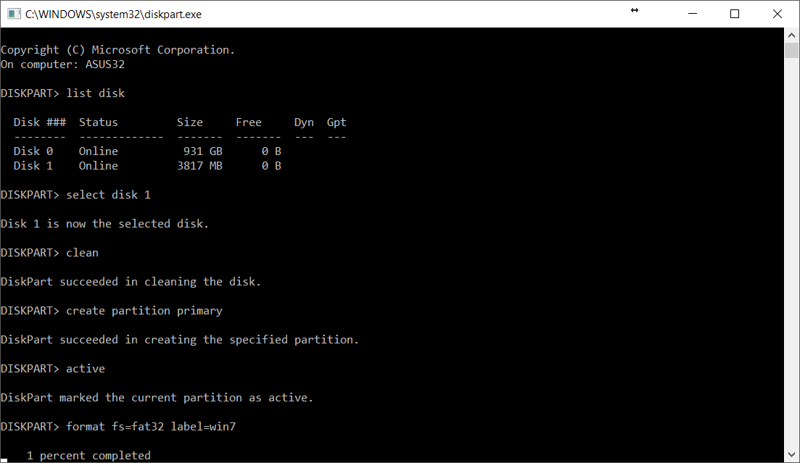
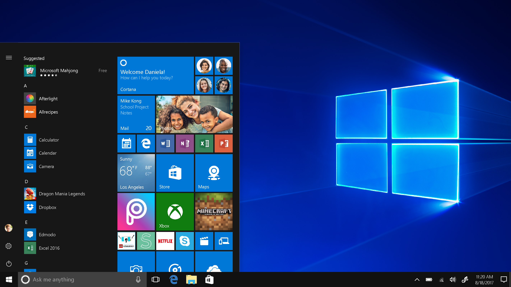

Pengertian

Dilansir dari Wikipedia.com, user interface memiliki pengertian sebagai sebuah bentuk tampilan yang berhubungan langsung dengan pengguna, dan user interface berfungsi untuk menghubungkan antara pengguna dengan sistem operasi sehingga komputer dapat dioperasikan.Dilansir dari Wikipedia.com, user interface memiliki pengertian sebagai sebuah bentuk tampilan yang berhubungan langsung dengan pengguna, dan user interface berfungsi untuk menghubungkan antara pengguna dengan sistem operasi sehingga komputer dapat dioperasikan. UI atau user interface atau tampilan antarmuka adalah bagaimana cara program dan user (pengguna) berinteraksi. Istilah user interface ini terkadang juga digunakan untuk pengganti istilah HCI (Human Computer Interaction).
Secara teknis, user interface berguna untuk menjembatani atau menerjemahkan informasi antara user dengen sistem operasi, sehingga komputer dapat didayagunakan oleh user. User interface juga dapat diartikan sebagai mekanisme inter-relasi dari hardware dan software yang membentuk pengalaman menggunakan sebuah set komputer. User inferface dari sisi perangkat lunak biasanya berbentuk GUI (Graphic User Interface) dan CLI (Command Line Interface), sedangkan dari sisi perangkat keras biasanya berbentuk ADB (Apple Desktop Bus), USB, dan Firewire.
Fungsi
User Interface merupakan pillar bagi sebagian besar perkembangan teknologi yang ada. Tanpanya, teknologi tersebut akan sulit digunakan atau tidak nyaman dipakai bagi mereka yang masih awam teknologi. User Interface berperan sebagai penghubung yang memudahkan penggunanya agar dapat menjalankan suatu program, aplikasi, maupun mengunjungi website.
Peran terbesar User Interface didominasi oleh penerapan Graphic User Interface (GUI) di berbagai program maupun aplikasi smartphone. Seperti yang kamu tahu, program maupun aplikasi yang ada di playstore semuanya dibangun dengan User Interface yang didasari Konsep desain User Experience (UX) yang baik.
Tujuan akhir dari sebuah UI adalah untuk menjamin kemudahan penggunaan, aksesibilitas fitur, dan User Experience yang memuaskan. Dengan kata lain, UI yang efektif memudahkan pengguna menikmati semua fitur dan fungsi yang ditawarkan oleh sebuah produk digital. Pengguna mereka kini bisa dengan mudah menjalankan program atau aplikasi tanpa harus repot-repot belajar ilmu komputer atau aplikasi. Karena mayoritas program yang dihadirkan memiliki aksesibilitas, bahasa, dan fitur yang mudah dipelajari serta digunakan.
Contoh
CLI dan GUI adalah berbagai jenis antarmuka pengguna. Terutama mereka berbeda dalam grafik yang digunakan dalam sistem operasi. Untuk melakukan operasi pada sistem CLI kita harus menulis perintah. Di sisi lain, dalam GUI pengguna menyediakan alat bantu visual (grafik) yang mencakup gambar dan ikon, yang memfasilitasi pengguna untuk melakukan tugas secara langsung. Sistem CLI membutuhkan keahlian dalam perintah untuk melakukan tugas sedangkan GUI tidak membutuhkan keahlian, itu bisa dioperasikan oleh pengguna pemula juga.
CLI (Command Line Interface)

CLI adalah Interface atau antarmuka berbasis teks yang digunakan untuk berinteraksi dengan perangkat lunak dan sistem operasi dengan mengetikkan perintah ke dalam antarmuka dan menerima respons dengan cara yang sama. CLI disediakan oleh sebagian besar sistem operasi secara default dan dua yang paling populer adalah DOS (untuk Windows) dan bash shell (untuk Linux dan OS X).
Pengguna harus memiliki pemahaman yang baik untuk menggunakan CLI. Pengguna harus benar-benar mengetahui sintaks yang benar untuk mengeluarkan perintah yang efektif.
Kelebihan CLI:
- Performa lebih tinggi
- Lebih efisien dalam penggunaan
- Hanya membutukan spesifikasi hardware yang rendah
- Hanya membutuhkan Memori yang kecil karena berupa teks saja
Kekurangan CLI:
- Tampilan yang kurang menarik bagi mereka yang awam ilmu komputer
- Harus mengingat baris perintah atau code untuk menjalankan tugas komputer
GUI (Graphic User Interface)

GUI adalah jenis antarmuka pengguna yang menggunakan metode interaksi pada peranti elektronik secara grafis (bukan perintah teks) antara pengguna dan komputer. GUI menjadi salah satu faktor kemudahan dalam penggunaan komputer. GUI menggambarkan informasi dan perintah yang tersedia untuk pengguna menggunakan ikon grafis. Contohnya adalah pada Microsoft Windows, macOS, dan Xwin yang menggunakan jenis GUI yang berbeda-beda.
Ada berbagai komponen GUI. Wndows merupakan salah satunya yang memiliki bentuk persegi panjang dan dapat tumpang tindih dengan area jendela lainnya. Textbox adalah komponen bagi pengguna untuk memasukkan data input. Menu menyediakan daftar opsi bagi pengguna untuk memilih opsi. Sebuah tombol memungkinkan memilih satu opsi tertentu. Dan masih banyak lagi.
Kelebihan GUI:
- Desain dapat diubah dan lebih User Friendly
- Karena berbasis grafis, tidak diperlukan keahlian khusus
Kekurangan GUI:
- Kebutuhan spesifikasi komputer yang lebih besar
- Performa lebih berat
- Memakan banyak ruang memori